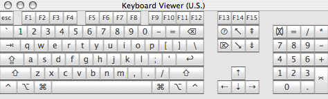
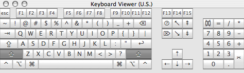
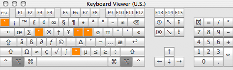

Default Mac OS X System Key Bindings

| Shortcut | English | Computerese | |
|---|---|---|---|
| ↩ | new line | insertNewline: | |
| ⌥ | ↩ | new line (don't leave form box)1 | insertNewlineIgnoringFieldEditor: |
| ⌅ | new line | insertNewline: | |
| ⌥ | ⌅ | new line (don't leave form box)1 | insertNewlineIgnoringFieldEditor: |
| ⇥ | tab | insertTab: | |
| ⌥ | ⇥ | tab (don't leave form box)1 | insertTabIgnoringFieldEditor: |
| ⇤ | backtab | insertBacktab: | |
| ⌘ | space | change languages | cycleToNextInputScript: |
| ⌘⌃ | space | change input system | togglePlatformInputSystem: |
| ⌘⌥ | space | change keyboard layout | cycleToNextInputKeyboardLayout: |
| ⌫ | delete backward | deleteBackward: | |
| ⌃ | ⌫ | delete backward (an accent) | deleteBackwardByDecomposingPreviousCharacter: |
| ⌃⌥ | ⌫ | delete backward one word | deleteWordBackward: |
| ⌥ | ⌫ | delete backward one word | deleteWordBackward: |
| ⌦ | delete forward | deleteForward: | |
| ⌥ | ⌦ | delete forward one word | deleteWordForward: |
| esc | cancel | cancelOperation: | |
| ⌥ | esc | complete current word | complete: |
| ⇡ | move up | moveUp: | |
| ⇧ | ⇡ | select upward | moveUpAndModifySelection: |
| ⌃ | ⇡ | scroll one page up | scrollPageUp: |
| ⌘ | ⇡ | move to the beginning of the document | moveToBeginningOfDocument: |
| ⌘⇧ | ⇡ | select to the beginning of the document | moveToBeginningOfDocumentAndModifySelection: |
| ⌥ | ⇡ | move to the beginning of the paragraph | (moveBackward:, moveToBeginningOfParagraph:) |
| ⌥⇧ | ⇡ | select to the beginning of the paragraph | moveParagraphBackwardAndModifySelection: |
| ⇣ | move down | moveDown: | |
| ⇧ | ⇣ | select downward | moveDownAndModifySelection: |
| ⌃ | ⇣ | scroll one page down | scrollPageDown: |
| ⌘ | ⇣ | move to the end of the document | moveToEndOfDocument: |
| ⌘⇧ | ⇣ | select to the end of the document | moveToEndOfDocumentAndModifySelection: |
| ⌥ | ⇣ | move to the end of the paragraph | (moveForward:, moveToEndOfParagraph:) |
| ⌥⇧ | ⇣ | select to the end of the paragraph | moveParagraphForwardAndModifySelection: |
| ⇠ | move left | moveLeft: | |
| ⇧ | ⇠ | select leftward | moveLeftAndModifySelection: |
| ⌃ | ⇠ | move to the beginning of the line | moveToBeginningOfLine: |
| ⌃⇧ | ⇠ | select to the beginning of the line | moveToBeginningOfLineAndModifySelection: |
| ⌘ | ⇠ | move to the beginning of the line | moveToBeginningOfLine: |
| ⌘⇧ | ⇠ | select to the beginning of the line | moveToBeginningOfLineAndModifySelection: |
| ⌘⌃ | ⇠ | switch writing direction to right-to-left | changeBaseWritingDirectionToRTL: |
| ⌥ | ⇠ | move one word left | moveWordLeft: |
| ⌥⇧ | ⇠ | select one word leftward | moveWordLeftAndModifySelection: |
| ⇢ | move right | moveRight: | |
| ⇧ | ⇢ | select rightward | moveRightAndModifySelection: |
| ⌃ | ⇢ | move to the end of the line | moveToEndOfLine: |
| ⌃⇧ | ⇢ | select to the end of the line | moveToEndOfLineAndModifySelection: |
| ⌘ | ⇢ | move to the end of the line | moveToEndOfLine: |
| ⌘⇧ | ⇢ | select to the end of the line | moveToEndOfLineAndModifySelection: |
| ⌘⌃ | ⇢ | switch writing direction to left-to-right text | changeBaseWritingDirectionToLTR: |
| ⌥ | ⇢ | move one word right | moveWordRight: |
| ⌥⇧ | ⇢ | select one word rightward | moveWordRightAndModifySelection: |
| ↖ | scroll to the beginning of the document | scrollToBeginningOfDocument: | |
| ⇧ | ↖ | select to the beginning of the document | moveToBeginningOfDocumentAndModifySelection: |
| ↘ | scroll to the end of the document | scrollToEndOfDocument: | |
| ⇧ | ↘ | select to the end of the document | moveToEndOfDocumentAndModifySelection: |
| ⇞ | scroll one page up | scrollPageUp: | |
| ⇧ | ⇞ | select one page up | pageUpAndModifySelection: |
| ⌥ | ⇞ | move one page up | pageUp: |
| ⇟ | scroll one page down | scrollPageDown: | |
| ⇧ | ⇟ | select one page down | pageDownAndModifySelection: |
| ⌥ | ⇟ | move one page down | pageDown: |
| ⌘ | . | cancel | cancelOperation: |
| ⌃ | A | move to the beginning of the paragraph | moveToBeginningOfParagraph: |
| ⌃ | B | move backward | moveBackward: |
| ⌃ | D | delete forward | deleteForward: |
| ⌃ | E | move to the end of the paragraph | moveToEndOfParagraph: |
| ⌃ | F | move forward | moveForward: |
| ⌃ | H | delete backward | deleteBackward: |
| ⌃ | K | delete to the end of the paragraph | deleteToEndOfParagraph: |
| ⌃ | L | center the selection in the text area | centerSelectionInVisibleArea: |
| ⌃ | N | move down | moveDown: |
| ⌃ | O | split the current line | (insertNewlineIgnoringFieldEditor:, moveBackward:) |
| ⌃ | P | move up | moveUp: |
| ⌃ | T | transpose letters | transpose: |
| ⌃ | V | move one page down | pageDown: |
| ⌃ | Y | yank back ‘killed’ text | yank: |
| F5 | complete current word | complete: | |
| ** Not on Apple keyboards ** | |||
| Backspace | delete backward | deleteBackward: | |
| ⌥ | Backspace | delete backward one word | deleteWordBackward: |
| Linefeed | new line | insertNewline: | |
| ⌥ | Linefeed | new line (don't leave form box)1 | insertNewlineIgnoringFieldEditor: |
- The commands invoked by ‘⌥ ⇥’ and ‘⌥ ↩’ are designed to avoid leaving the current text box, as happens when pressing ‘⇥’, which usually tabs to the next form field, or ‘↩’, which usually submits the form.
US Keyboard Layout with Modifier Keys

